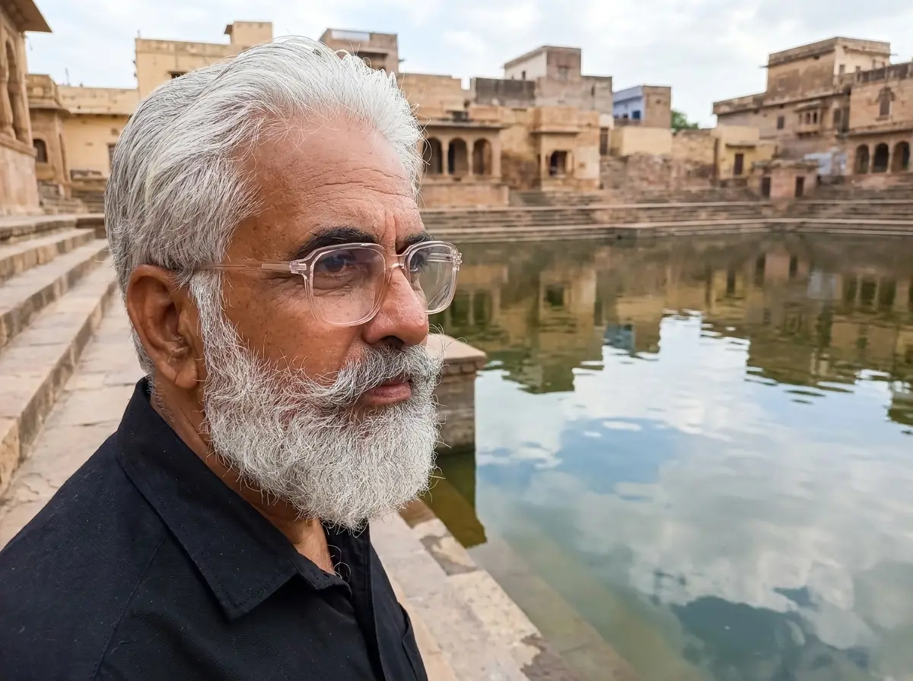

Distance: about 21 km (seven kos); some count it as 23 km
Time on foot: 5–7 hours with short breaks
Usual start: Daan Ghati or Mansi Ganga, walking clockwise
From Agra: 85–95 km via Mathura, about 2 hours
Cab: driver drops you at the start and waits; fare confirmed on WhatsApp
Govardhan is the hill that Krishna is said to have lifted on one finger to shelter the people of Braj from the rain. Devotees honour it by walking all the way around. This walk is the Govardhan Parikrama. Here is what it involves and how to plan it from Agra.
Padma Shree Travels takes families from Agra to Govardhan in AC cabs. The driver drops you at the start and waits for you. WhatsApp +91 87200 81102.
The full Parikrama is about 21 km, traditionally called seven kos. Some sources count it as 23 km, depending on where you start and which lanes you take. It has two parts, and many people do only one:
Most pilgrims begin at Daan Ghati temple or at Mansi Ganga in Govardhan town. You walk clockwise, keeping the hill on your right. The usual order of the main stops is:
A steady walker finishes the full 21 km in 5 to 7 hours, including tea and darshan stops. If you stop at every temple, allow up to 9 hours. The Badi Parikrama alone takes about 3 to 4 hours.
The path is flat and partly paved, with stalls for water, tea and food along the way. Many devotees walk barefoot. If you do, go in the cooler hours. The ground gets very hot by late morning in summer.
Govardhan is 85 to 95 km from Agra via Mathura, about 2 hours by car. A 6:00 AM pickup puts you at Daan Ghati around 8:00 AM.
The car cannot follow the walking path. So the driver drops you at the start, waits at an agreed spot, and picks you up where you finish. Waiting is included within the booked day. You are usually back in Agra by 5:00 to 6:00 PM. Details are on our Agra to Govardhan taxi page.
Not everyone in the family can walk 21 km, and nobody needs to feel bad about it. There are three easy options:
Travelling with parents? Our senior-citizen temple tour guide has more on pacing the day.
A water bottle, a cap, a small towel and some cash for offerings and tea. Leave bags and shoes in the car. Keep food packets out of sight, because the monkeys on this route are quick.
If you do darshan by car, or only the short Parikrama, there is time to add Mathura or Barsana on the way back. A full 21 km walk is enough for one day. For the wider circuit, read our complete Braj Yatra guide.
The full Govardhan Parikrama is about 21 km, traditionally called seven kos. Some count it as 23 km depending on the starting point. It has two parts: the Badi Parikrama of about 12 km and the Chhoti Parikrama of about 9 km.
Most people finish the full 21 km in 5 to 7 hours on foot, including short breaks. With darshan at every temple it can take up to 9 hours. The Badi Parikrama alone takes about 3 to 4 hours.
Most pilgrims start at Daan Ghati temple or at Mansi Ganga in Govardhan town and walk clockwise, keeping the hill on their right. You finish at the same point where you began.
Govardhan is 85 to 95 km from Agra via Mathura, about 2 hours by private taxi. A 6:00 AM pickup from Agra reaches Govardhan around 8:00 AM. The driver drops you at the Parikrama start, waits, and picks you up when you finish.
Yes, with a lighter plan. Elders can do only the Chhoti Parikrama of about 9 km, take an e-rickshaw along the Parikrama road, or do darshan by car at Daan Ghati, Jatipura, Radha Kund and Kusum Sarovar without walking the full route.
October to March is the most comfortable season. Start at dawn or walk in the evening. Full-moon days, Guru Purnima and Govardhan Puja are very crowded, so choose an ordinary weekday for a calmer walk.
Fixed fare in writing · Driver waits within the booked day · Driver details before pickup